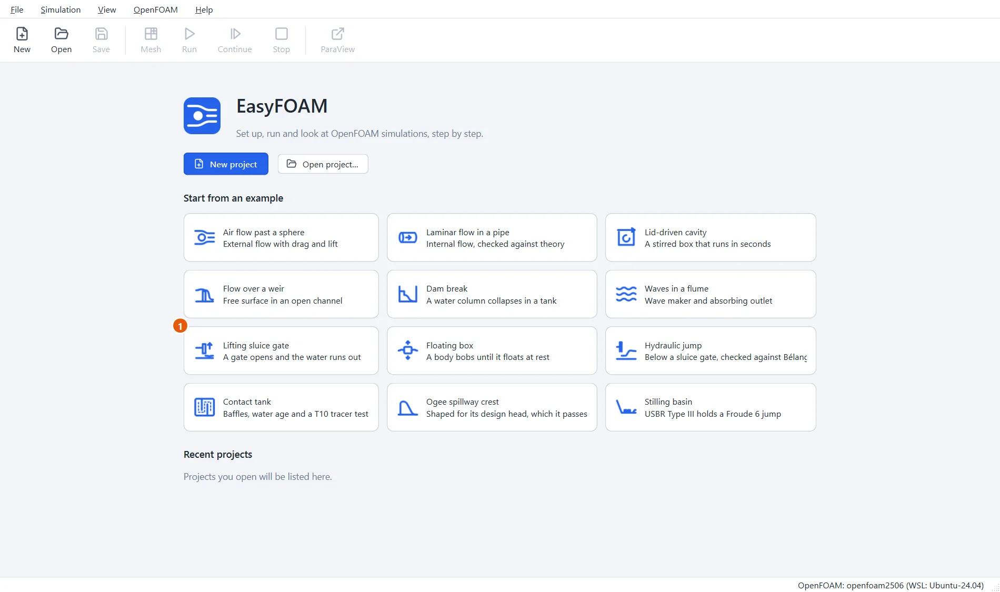
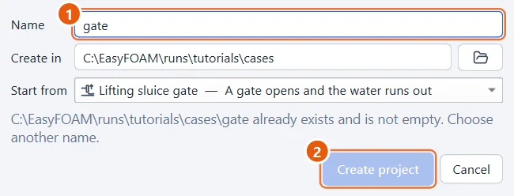
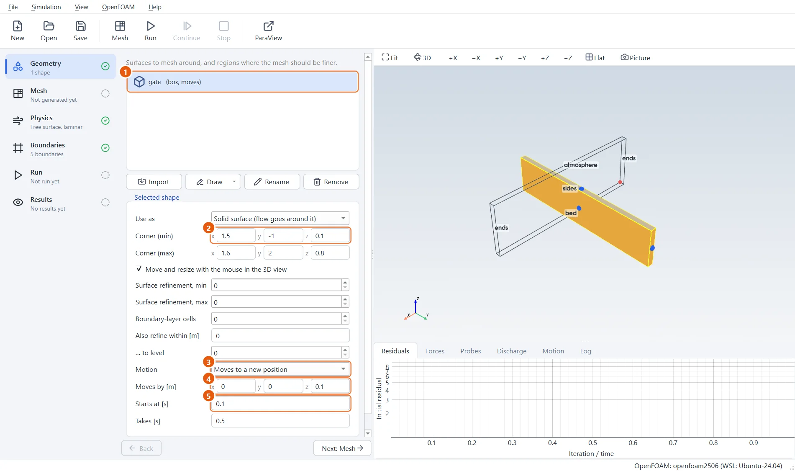
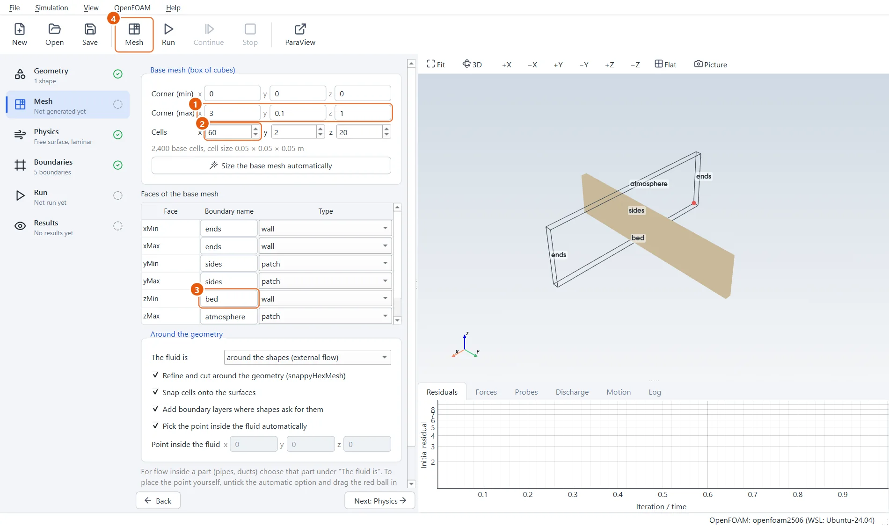
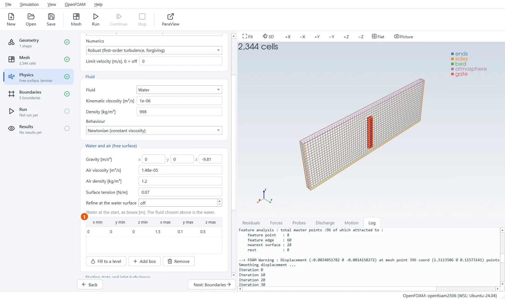
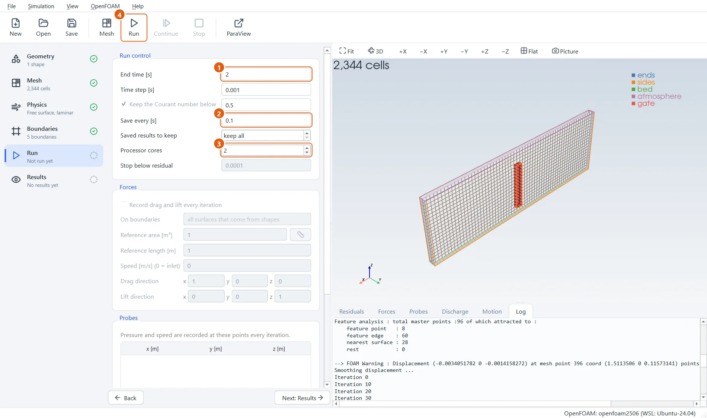
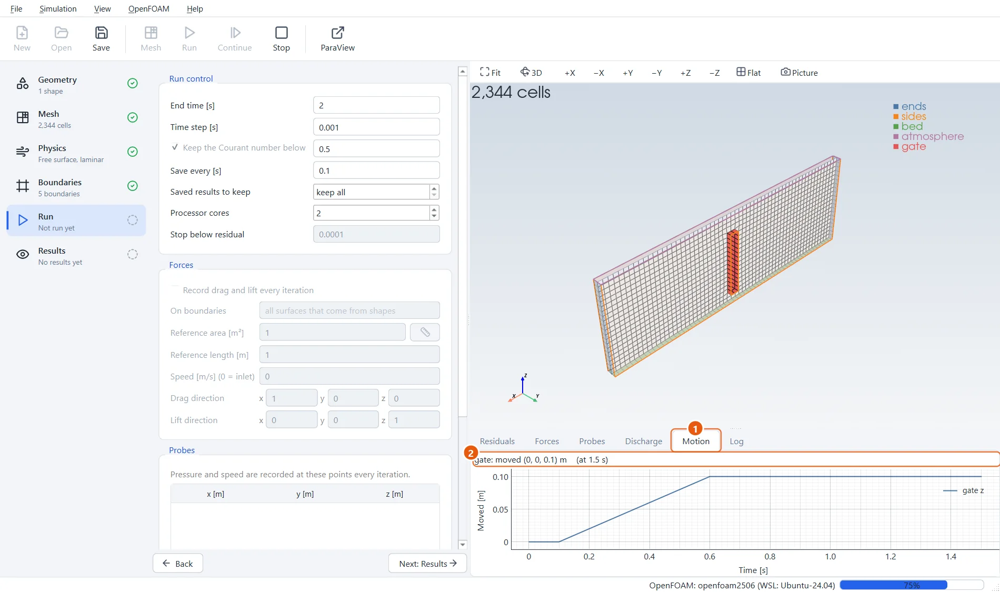
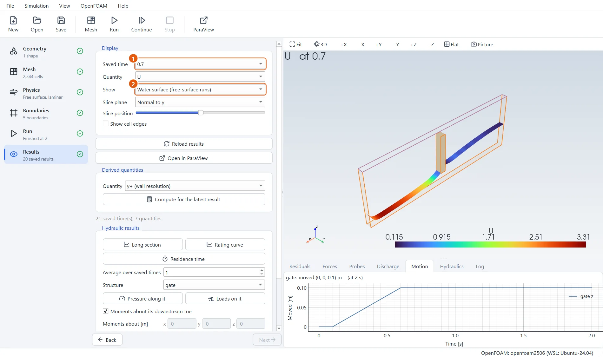

Tutorial 9 of 17
Lifting sluice gate
A shape that moves during the run: a gate lifts and the water behind it runs out underneath.
Gates and valves change the flow by moving. In EasyFOAM any solid shape can be given a motion: it can move to a new position over a set time, swing back and forth, or float. The mesh stretches to follow the shape while the run goes on.
Here a sluice gate holds back water 0.5 m deep, with a 0.1 m gap under it. A tenth of a second into the run the gate starts to lift, and half a second later the gap has doubled.
What you will learn
- give a shape a motion: how far, from when, for how long
- follow the motion while the run goes on
- know what a stretching mesh can and cannot do
Computer time: a few seconds for the mesh and about a minute for the run, on two cores.
1Open the example
Start EasyFOAM. This case is one of the examples on the start page: it comes with every setting filled in, and this tutorial walks through each of them so that you understand the case and could build it yourself.
- Click Lifting sluice gate.


2Name the project
The project is an ordinary folder that EasyFOAM creates for you.
- Type a name, for example
gate. - Click Create project.


3The gate and its motion
The gate is a box 0.1 m thick whose lower edge is 0.1 m above the bed. At the bottom of its settings is Motion. Moves to a new position asks for three things: how far the shape ends up from where it is drawn, when it starts, and how long the move takes. It moves at a steady speed in between.
- The shape gate. The list notes that it moves.
- The lower edge of the gate is at z =
0.1m. - Motion: Moves to a new position.
- Moves by:
0,0,0.1, so 0.1 m straight up. - Starts at
0.1s and Takes0.5s.


4The channel
The channel is 3 m long and 1 m high, modelled as a slice two cells thick. Both ends are closed walls, the top is open to the air.
- Corner (max):
3,0.1,1. - Cells:
60,2,20, which makes 5 cm cubes. bedis a wall andatmospherean opening.- Click Mesh in the toolbar (or press F5).


5Water behind the gate
The flow type is Free surface: water and air; a shape can only move in a run in time, and all free-surface runs are. Scroll down to Water and air: the water starts on the upstream side only, one box from the end wall to the face of the gate, 0.5 m deep.
- One box of water: from
0, 0, 0to1.5, 0.1, 0.5.


6Run for two seconds
Nothing is special about the run settings: a moving shape needs no extra choices here.
- End time:
2s. - Save every:
0.1s. - Processor cores:
2. - Click Run in the toolbar (or press F6).


7Follow the gate
The Motion tab plots how far each moving shape has travelled. The gate waits for a tenth of a second, rises steadily, and stops 0.1 m higher.
- Open the Motion tab.
- Where the gate is now.


8The water runs out
In the Results step, look at the moment just after the gate has stopped, at 0.7 s. The water is shooting through the gap, twice as high now as at the start, and running down the channel. Step through the saved times and you can see the gate itself rise in the 3D view.
- Saved time:
0.7. - Show: Water surface, coloured by
U, the speed.


9What a moving mesh can and cannot do
The mesh is not rebuilt when a shape moves. The cells around the shape are stretched and squeezed to follow it, and their number stays the same. That is quick and robust, but it sets limits:
- Keep a movement well below the gap between the shape and the nearest wall.
- A gate can open further or close part of the way. It cannot shut completely, because the cells under it would be squeezed to nothing. Leave a small gap.
- Moving shapes cannot be combined with mesh refinement at the water surface.
10Try it yourself
- Lift the gate more slowly (Takes
1.5s) and compare the surge downstream. - Lower it instead: Moves by
0,0,-0.05halves the gap. - Choose Swings back and forth with an amplitude of
0.05,0,0and a period of1s to turn the gate into a wave paddle.